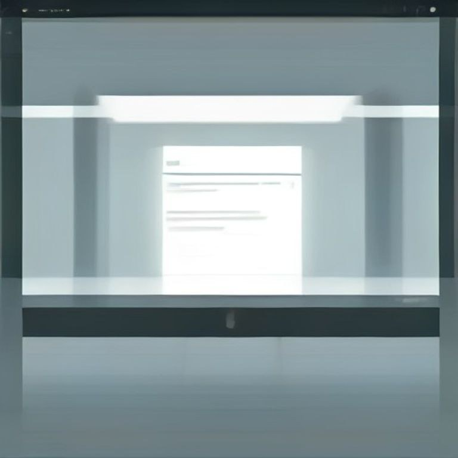

Menghabiskan waktu berhari-hari di depan laptop untuk menyusun materi e-book atau mendesain template Notion yang rumit sering kali terasa produktif. Namun, produktivitas semu tersebut langsung runtuh ketika tautan pembayaran dibagikan dan tidak ada satu orang pun yang melakukan transaksi. Pola kegagalan ini dialami oleh sebagian besar pemula yang langsung terjun ke tahap produksi tanpa menguji apakah masalah yang ingin mereka selesaikan memang benar-benar ada dan dirasakan mendesak oleh calon pembeli.
Membuat produk digital tanpa validasi awal ibarat memasak makanan dalam porsi hajatan sebelum mengetahui berapa orang tamu yang akan datang. Dalam ekosistem bisnis digital, kepastian pasar harus selalu mendahului proses penciptaan. Dengan memahami cara validasi ide produk digital sebelum dibuat, kamu bisa menghemat puluhan jam kerja sekaligus memastikan setiap produk yang kamu rilis memiliki basis audiens yang nyata.
Apa Itu Validasi Ide Produk Digital dan Cara Kerjanya
Validasi ide produk digital adalah proses membuktikan bahwa sekelompok orang memiliki masalah nyata dan bersedia mengeluarkan uang untuk mendapatkan solusinya, sebelum kamu membuat produk tersebut secara utuh. Ini bukan sekadar meminta pendapat teman atau membuat polling di media sosial yang menanyakan apakah ide tersebut menarik.
Bayangkan seorang katering yang ingin menyajikan menu baru. Alih-alih langsung memasak 100 porsi rendang kemasan, ia membuka pemesanan awal kepada 10 pelanggan tetapnya dengan potongan harga. Jika 7 orang langsung membayar uang muka, barulah ia membeli bahan baku dan mulai memasak. Jika tidak ada yang mau memesan, ia hanya kehilangan waktu menyusun daftar menu, bukan rugi jutaan rupiah untuk bahan yang membusuk.
Hal yang sama berlaku pada produk digital. Baik itu template Canva, panduan PDF, preset foto, maupun sistem lembar kerja spreadsheet, kamu menguji komitmen audiens terlebih dahulu. Validasi yang valid selalu melibatkan komitmen nyata dari calon pembeli, baik berupa data kontak langsung (seperti email atau nomor WhatsApp) maupun transaksi finansial di awal.
Kenapa Validasi Awal Menentukan Keberhasilan Produk Digital
Banyak kreator terjebak dalam bias konfirmasi: karena mereka merasa membutuhkan sebuah alat atau ringkasan materi, mereka berasumsi bahwa ribuan orang lain di internet merasakan kebutuhan mendesak yang sama. Padahal, kebutuhan pribadi belum tentu menjadi kebutuhan pasar yang bernilai komersial.
Ketika kamu melompati tahap validasi, risiko terbesar yang kamu tanggung bukanlah kehilangan modal uang, melainkan kehilangan modal tenaga dan motivasi. Setelah begadang selama dua minggu merapikan tata letak dokumen dan tidak ada yang membeli, sebagian besar pemula akan langsung menarik kesimpulan keliru bahwa bisnis produk digital adalah omong kosong atau akun mereka terkena pembatasan algoritma.
Padahal, jika kamu menguji ide tersebut sejak hari pertama melalui metode riset terarah seperti yang dibahas pada panduan membuat produk digital dari keahlian, kamu bisa langsung mengetahui respons pasar dalam waktu kurang dari 48 jam. Jika responsnya dingin, kamu bisa segera beralih ke sudut pandang masalah berikutnya tanpa beban psikologis.
Langkah Demi Langkah Memvalidasi Ide Produk Digital
Untuk memastikan idemu memiliki landasan yang kokoh, ikuti empat tahapan berurutan berikut ini secara disiplin. Jangan berpindah ke tahap berikutnya sebelum mendapatkan data konkret dari tahap sebelumnya.
Petakan Masalah Spesifik dari Keluhan Nyata
Buka kolom komentar media sosial, forum diskusi, atau ulasan produk kompetitor yang relevan dengan topikmu. Cari pola kalimat keluhan yang berulang, terutama yang menggunakan kata "susah", "bingung", "lama", atau "rumit". Catat persis kata-kata yang dipakai calon audiens untuk mendeskripsikan hambatan mereka.
Rumuskan Solusi Terkecil yang Bekerja (MVP)
Tentukan format produk paling sederhana yang mampu menyelesaikan hambatan tersebut. Jangan langsung merancang kursus 20 video jika satu lembar checklist Canva atau template Notion sederhana sudah bisa memberikan solusi langsung.
Buat Konten Uji Minat Organik
Publikasikan satu utas atau video pendek yang membagikan potongan kecil dari solusi tersebut secara gratis. Di bagian akhir, berikan ajakan bertindak: tanyakan siapa yang menginginkan versi lengkap atau format template yang sudah dirapikan.
Buat Sistem Pre-Order dengan Penawaran Terbatas
Arahkan audiens yang merespons ke halaman penawaran pemesanan awal (pre-order). Tetapkan harga khusus yang lebih murah dengan tanggal rilis yang jelas (misalnya 3 sampai 5 hari ke depan). Jika ada sejumlah transaksi minimal yang masuk, barulah kamu memproduksi produk tersebut sampai selesai.
Sistem ini memastikan bahwa kamu hanya bekerja ketika bahan bakar permintaannya sudah nyata. Dalam tahap ini, penyusunan struktur naskah atau penyiapan halaman landing page yang rapi bisa dipelajari melalui materi di katalog panduan Sutradara Digital atau template halaman siap pakai di 10Template.
Contoh Kasus Nyata: Validasi Template Keuangan Rumah Tangga

Mari bedah contoh kasus nyata seorang kreator yang ingin membuat produk digital bertema pencatatan keuangan pribadi untuk ibu rumah tangga.
Alih-alih langsung membangun spreadsheet rumit dengan 50 rumus makro otomatis, kreator ini melakukan pengujian sederhana:
- Hari 1: Membaca grup komunitas dan menemukan keluhan bahwa aplikasi pencatat keuangan rata-rata terlalu rumit karena meminta input detail per kategori yang melelahkan.
- Hari 2: Membuat satu postingan infografis sederhana yang menunjukkan metode pencatatan arus kas hanya dengan 3 kolom utama: Uang Masuk, Kebutuhan Pokok, dan Tabungan.
- Hari 3: Di akhir postingan, ia menulis: "Aku lagi merapikan template Notion & Spreadsheet siap pakai dengan sistem 3 kolom ini biar kalian nggak perlu bikin rumus dari nol. Khusus 20 orang pertama, aku buka harga pre-order Rp39.000 (harga rilis nanti Rp79.000). Produk dikirim hari Jumat lewat email."
| Indikator Pengujian | Target Minimum | Hasil Nyata | Keputusan |
|---|---|---|---|
| Komentar berminat | 10 komentar | 28 komentar | Lolos uji minat awal |
| Pembayaran pre-order | 5 transaksi | 12 transaksi | Lanjut proses produksi template |
| Tingkat komplain rilis | Maksimal 1 orang | 0 komplain | Ide tervalidasi sempurna |
Karena 12 orang sudah melakukan pembayaran di muka, kreator tersebut memiliki waktu 48 jam untuk menyempurnakan template dan membagikannya tepat pada hari Jumat. Jika saat itu nol orang yang mentransfer, ia cukup mengirimkan pesan permohonan maaf dan tidak kehilangan waktu berminggu-minggu membuat fitur yang tidak dibutuhkan.
Kesalahan Umum Saat Melakukan Riset dan Validasi Ide
Agar proses risetmu tidak memberikan hasil positif palsu, hindari empat kekeliruan fatal yang paling sering menjebak pembuat produk pemula:
1. Mengandalkan Pertanyaan Hipotesis ("Kalau aku bikin ini, kamu mau beli nggak?")
Manusia secara alami bersikap sopan dan cenderung menjawab "mau" atau "bagus" saat ditanya ide masa depan. Jawaban di polling Instagram atau Twitter sama sekali tidak berkorelasi dengan kesediaan mereka membuka aplikasi m-banking saat produk resmi diluncurkan.
2. Menanyakan Ide ke Teman Dekat atau Keluarga
Lingkaran pertemanan dekat biasanya ingin mendukung perasaanmu, sehingga penilaian mereka tidak objektif. Ujilah ide tersebut langsung kepada orang asing di internet yang tidak memiliki ikatan emosional denganmu.
3. Mematok Harga Terlalu Murah Saat Validasi
Menjual template seharga Rp5.000 tidak memvalidasi bisnis produk digital, karena angka tersebut terlalu kecil untuk mengukur keseriusan masalah konsumen. Gunakan rentang harga wajar produk komersial agar daya beli audiens teruji dengan akurat.
Validasi ide bukan berarti menjamin penjualanmu akan selalu meledak jutaan rupiah setiap hari. Validasi adalah sabuk pengaman: tujuannya memastikan bahwa kamu tidak membuang waktu 30 hari untuk produk yang potensi pasarnya nol.
Cara Mengecek Apakah Idemu Sudah Siap Diproduksi
Sebelum kamu membuka aplikasi Canva, Google Docs, atau Notion untuk mulai membuat aset jualan, uji kesiapan idemu dengan tiga pertanyaan penentu berikut ini. Jelaskan jawabannya dengan kata-katamu sendiri tanpa melihat catatan teori:
- Apakah kamu bisa menyebutkan 1 masalah spesifik yang diselesaikan produk ini tanpa menggunakan kata-kata abstrak? Jika jawabanmu masih seputar "membantu orang lebih produktif", definisimu terlalu luas. Sempurnakan menjadi "membantu pekerja lepas mengatur jadwal 3 proyek sekaligus tanpa telat tenggat waktu".
- Di mana kamu menemukan keluhan persis dari calon pengguna tersebut? Kamu harus bisa menunjukkan bukti tangkapan layar komentar, utas forum, atau pesan langsung dari orang yang mengeluhkan hal tersebut dalam 30 hari terakhir.
- Apakah sudah ada minimal 3 orang asing yang memberikan komitmen nyata (email atau uang muka)? Jika belum ada satu orang pun yang bersedia mengambil tindakan kecil, perbaiki sudut pandang penawaranmu sebelum mulai menulis baris materi pertama.
Polanya sederhana: sistem validasi mengalahkan asumsi pribadi. Langkah pertama yang bisa kamu lakukan hari ini bukanlah mendesain cover produk yang cantik, melainkan mencari 5 keluhan teratas di kolom komentar media sosial yang berkaitan dengan keahlianmu. Temukan pola masalahnya, tawarkan solusi awalnya, dan biarkan respons pasar yang menentukan kapan kamu harus mulai memproduksi.
Sumber
- Forrester Research on Conversion & Customer Experience — Forrester · 18 Agu 2026, 09:00 WIB
- Stanford Web Credibility Research Guidelines — Stanford University · 18 Agu 2026, 11:30 WIB